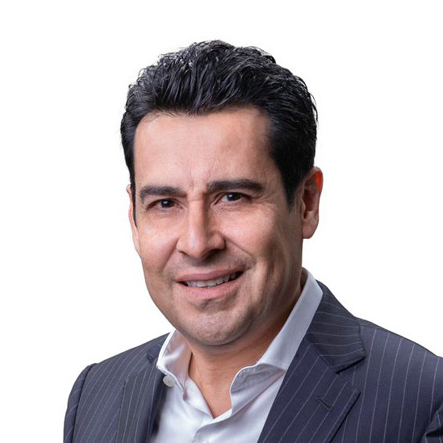

Jueces
Rosa Cristina Buendía
Titular en la Contraloría General de Baja California Sur
Roberto de Michele
Jefe de la División de Capacidad Institucional del Estado del Sector de Instituciones para el Desarrollo del Banco Interamericano de Desarrollo
León David Zayas Ornelas
Director de Vinculación con el SNA en Secretaría de la Función Pública
María de los Ángeles Estrada González
Directora Ejecutiva de la Iniciativa de Transparencia, Anticorrupción y Digitalización en la Escuela de Gobierno y Transformación Pública

Luis Danton
Vicepresidente de la Comisión Anticorrupción de la Cámara de Comercio Internacional México (ICC México)
Julio Sabines Chesterking
Magistrado de Sala Superior del Tribunal Federal de Justicia
Jorge Alberto Alatorre Flores
Presidente del Comité de Participación Ciudadana (CPC) y del Sistema Nacional Anticorrupción (SNA)
Claudia Adriana Valdés López
Secretaría Técnica de la Secretaría Ejecutiva del Sistema Estatal Anticorrupción del Estado de México y Municipios (SESAEMM)
Andrea Barenque Hernández
Fundadora y directora general de Datamorfosis